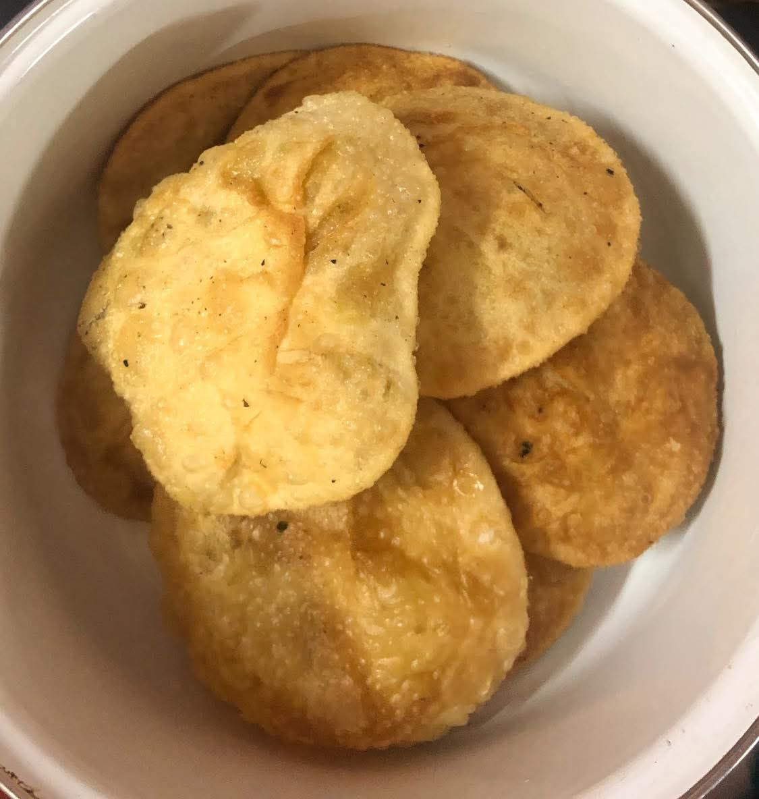

Dal Puri 🫓
Crispy, golden, and stuffed with flavorful spiced lentils — Dal Puri is a beloved South Asian dish that's both satisfying and delicious. Perfect for breakfast or as a special treat during festivals, this puri will melt in your mouth with every bite!
Ingredients
- 1 cup chana dal (Bengal gram)
- 2 cups all-purpose flour
- 1/2 tsp salt
- 1 tsp cumin seeds
- 1 tsp coriander powder
- 1 tsp chili powder
- 1/2 tsp turmeric powder
- 1 tbsp ginger-garlic paste
- 2 tbsp oil (for dough)
- Oil for deep frying
Instructions
- Prepare dal filling: Boil chana dal until soft but not mushy. Drain and mash coarsely.
- Spice it up: Heat 1 tbsp oil in a pan. Add cumin seeds, ginger-garlic paste, chili powder, turmeric, and coriander powder. Add the mashed dal and stir well. Cook for 3-4 minutes until dry. Let it cool completely.
- Make the dough: In a bowl, combine flour, salt, and 2 tbsp oil. Add water little by little and knead into a soft dough. Cover and rest for 20-30 minutes.
- Stuff the puris: Divide the dough into small balls. Flatten one, add 1 spoonful of dal mixture, and seal the edges. Gently roll into a small round puri.
- Fry: Heat oil in a deep pan. Fry puris one by one on medium heat until golden and puffed up. Drain on paper towels.
- Serve: Enjoy hot with potato curry, chutney, or even plain yogurt. 🩷
Tip: You can also use moong dal instead of chana dal for a lighter version.